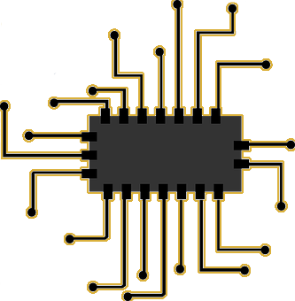
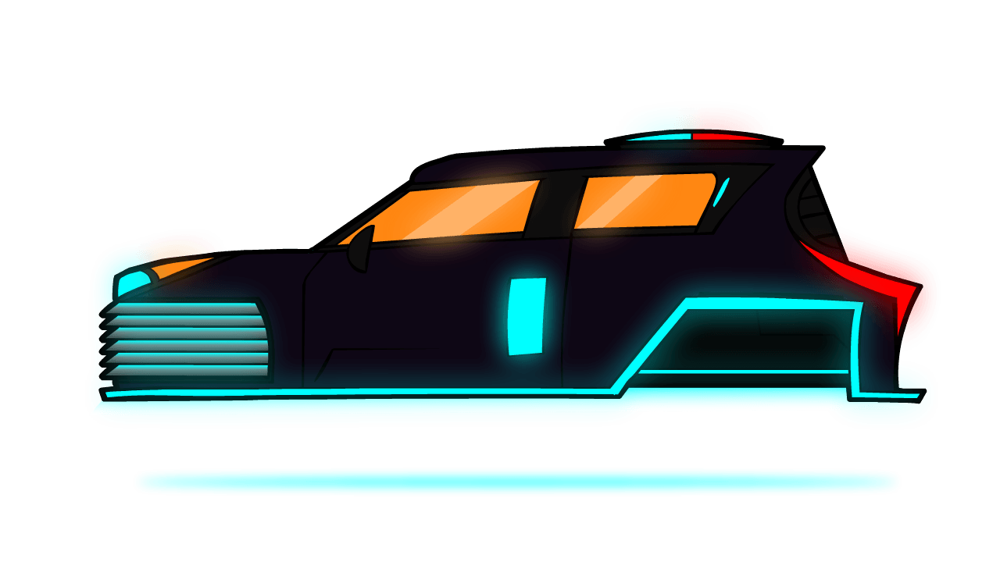
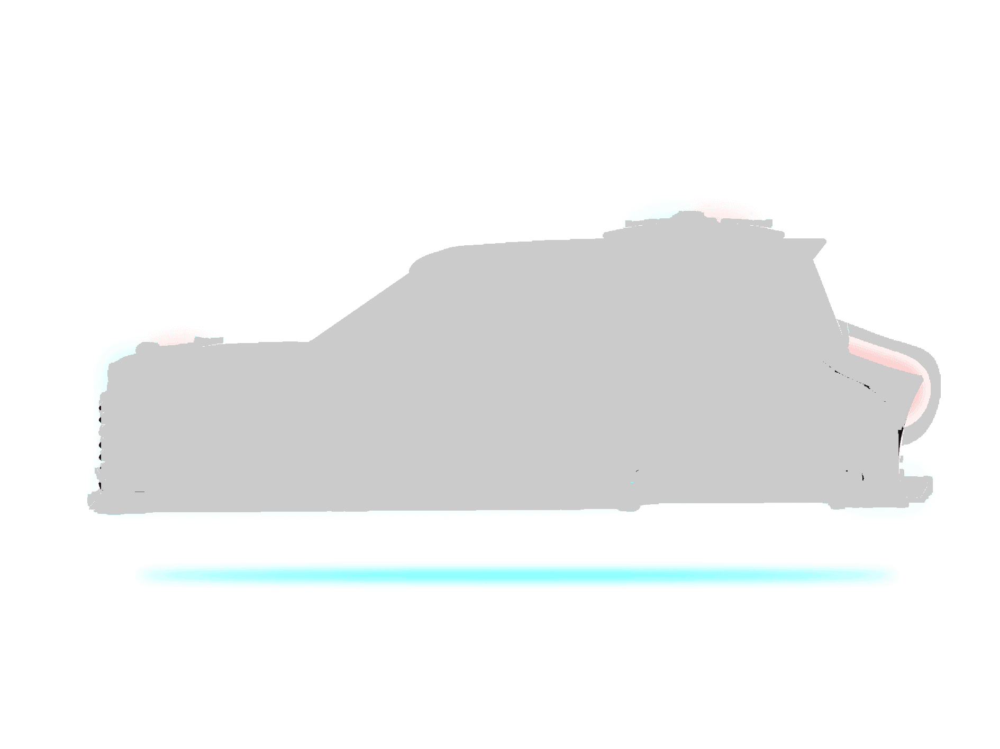
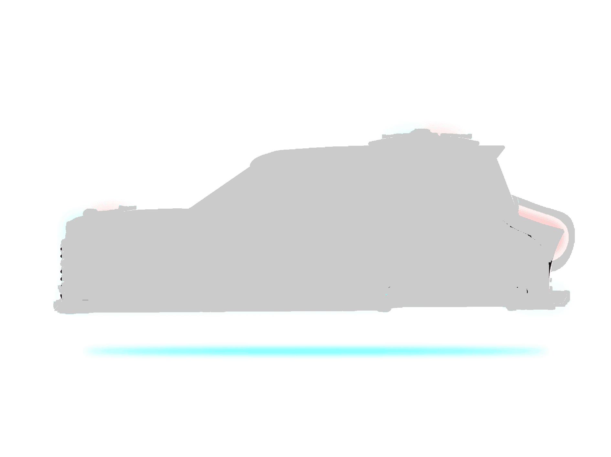
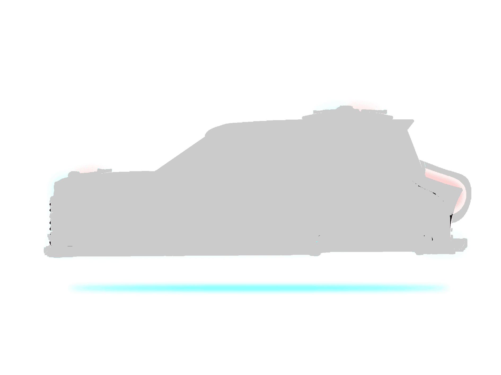
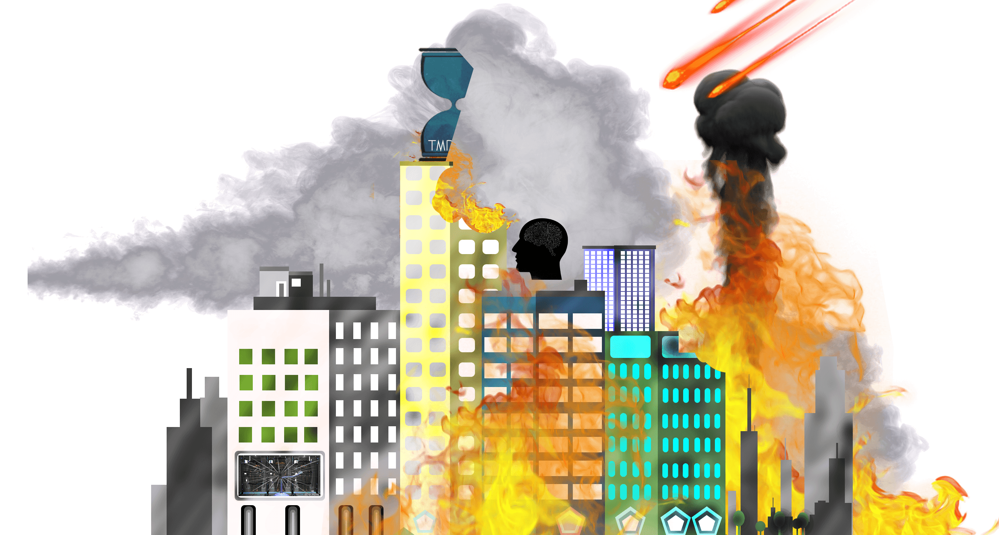

 


Greetings!
CRYO
Abuja, 2808 A.D, Population: 300 000
The End
Earth had just taken another huge leap.
CryoTechnology had finally gotten figured out.
Humans had gone all the way from Automation
to being able to upload their own brain
to a computer.
It was safe to say that life on earth
was heading in the right direction.
Not to say the earth was perfect,
people still had their doubts,
but in most peoples eyes
it was as close to perfect as it had ever been.
Then, like lightning from clear sky, it all came
to a sudden end.
The human race experienced alot of changes over the last couple of centuries.
Even though the overall quality and span of life increased, they still had one problem.
The universe
Still as unpredictable as it had always been. And in the end, what went up did come down.
